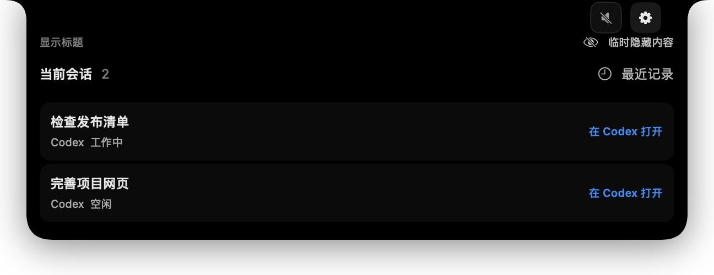
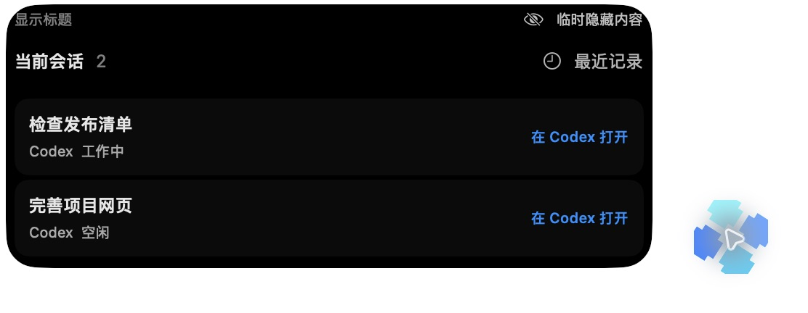
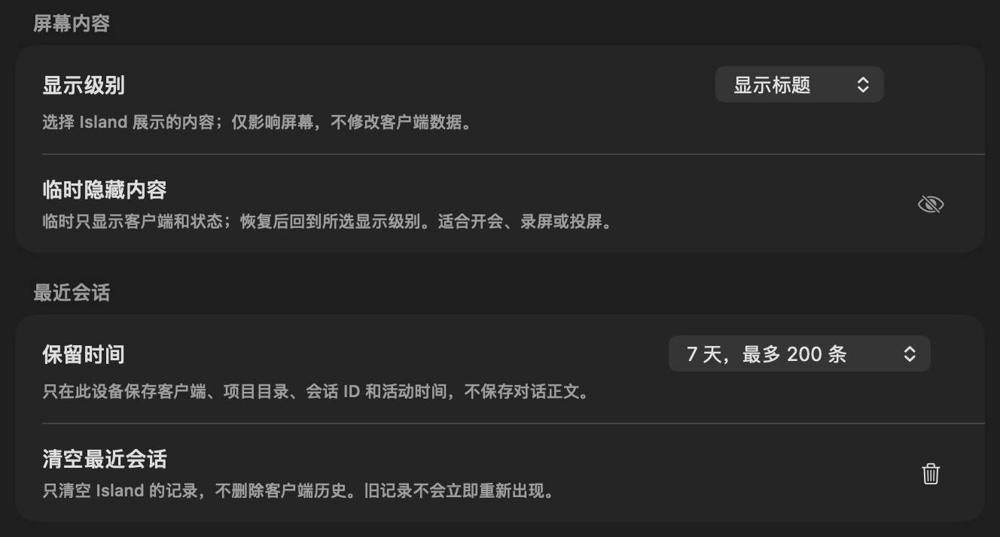

01 / 使用指南
不用逐个窗口确认。
当前会话优先显示客户端原生标题。需要回复或审批时，使用打开按钮回到原客户端；Mac Island 不替你发送消息，也不代做审批。
为专注而留的一小块空间
把分散在不同客户端的任务状态，放到 Mac 的屏幕顶部。需要时展开，处理完收起。
目前提供源码，正式签名安装包尚未发布。macOS 14+ 是部署目标；最低系统与 Intel 仍待实机验收。

连接你已经在用的工具
01 / 使用指南
当前会话优先显示客户端原生标题。需要回复或审批时，使用打开按钮回到原客户端；Mac Island 不替你发送消息，也不代做审批。
顶部 Island 与可移动的悬浮 Island 使用相同的会话与隐私规则。选择适合当前屏幕的展示位置。


03 / Personal Agents
Muse 与 Grok Bot 以一个当前可识别 Bot 上下文一张卡呈现。实验来源默认关闭，需要辅助功能权限和已验证的应用版本；不保证发现后台 Bot 或准确运行状态。
先看支持范围与限制 →